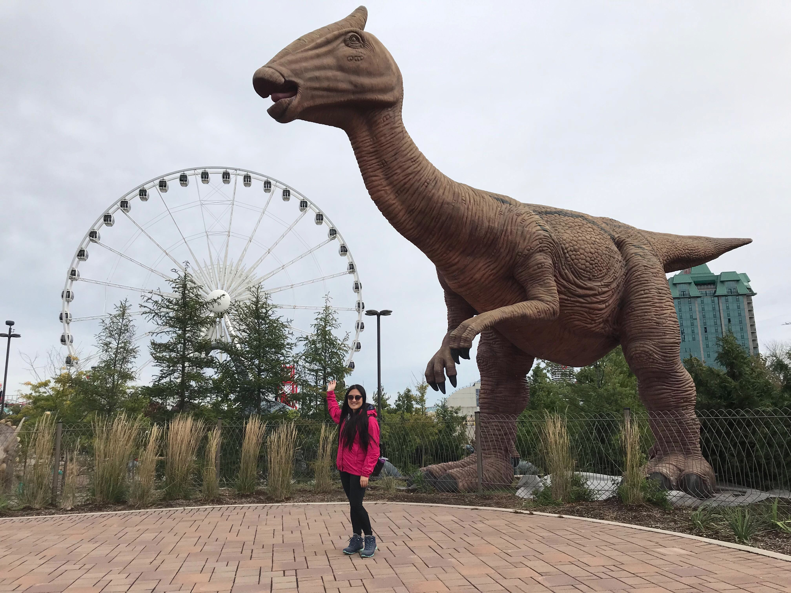

About Me
Hello! I currently work in higher education. Many of my responsibilities revolve around managing vendor software and related processes. This translates to eternally needing to (effectively) coordinate the translation of business and technical needs to the desired end product (new process, interface, enhancement, etc.).
I am a lifelong learner and always looking to expand my knowledge and skill set. I decided to become a coding bootcamp student to learn full-stack development. Even if I’m not the one doing development work, understanding the front end, back end, web and software development process, and developing well-rounded knowledge of data structures, will greatly enrichen the ability with which I can efficiently work with vendors, developers, and other stakeholders to drive a project or process to the best possible solutions.
In my spare time (if I’ll even have any while in the bootcamp), I enjoy traveling and eating my way through anywhere I travel to.